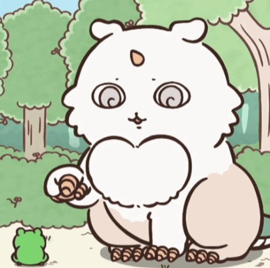

The mysterious chimera Anoko is a large, fluffy monster with a distinctive green tail, small horn, and sharp claws. Although their appearance is adorable, Anoko can be dangerous and has been shown attacking other creatures. Personality: Mysterious and unpredictable; their motives are not fully understood. Fun fact: The story hints that Anoko may once have been an ordinary character who worked alongside Chiikawa at a lemon-labeling factory. This connection is suggested rather than fully explained. Character list!